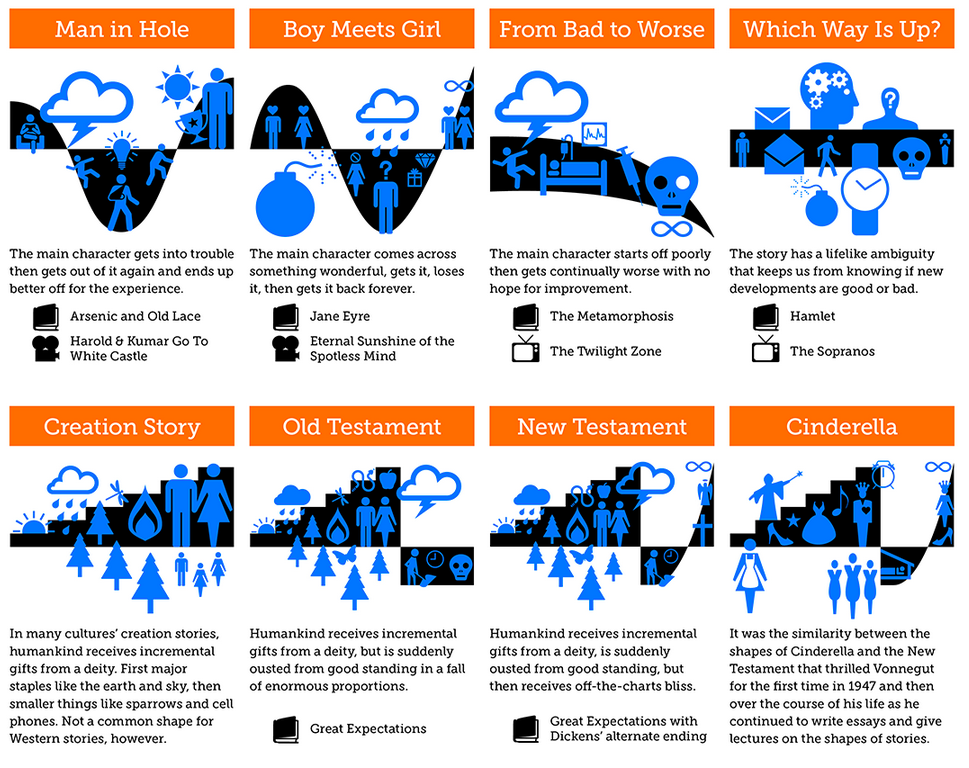
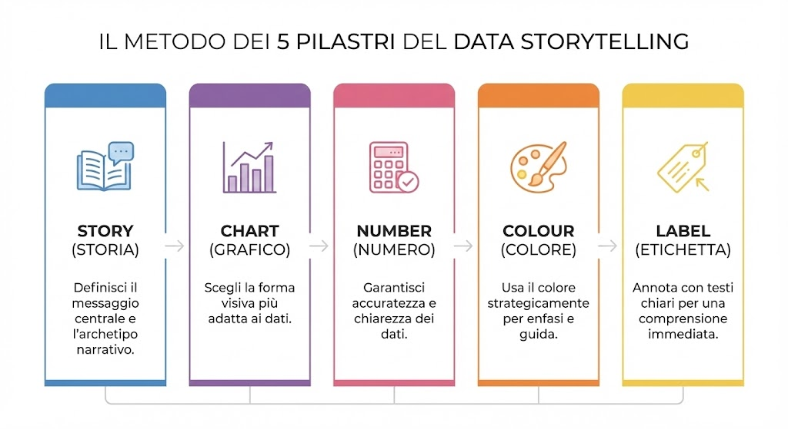
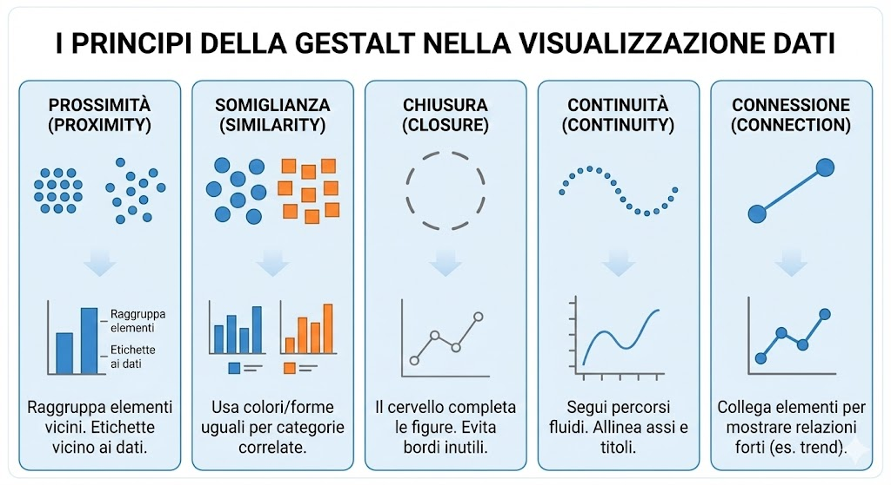
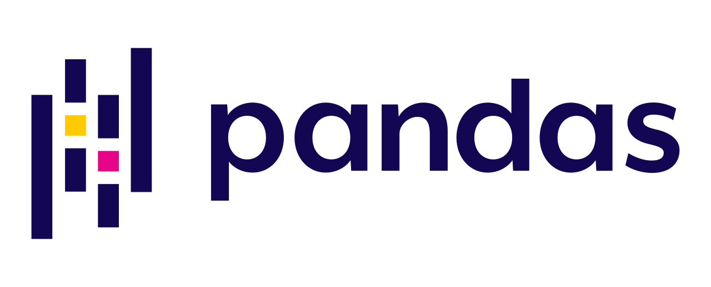

15 Raccontare una storia con i dati
15.1 La Forma delle Storie (e dei Dati)
“Non esiste grafico senza storia, così come non esiste storia senza una forma.”
Immagina di tracciare la vita di un protagonista su un piano cartesiano. Sull’asse delle X hai il tempo; sull’asse delle Y hai la “fortuna” (dalla sventura alla felicità). Kurt Vonnegut, celebre scrittore americano, ci ha insegnato che tutte le grandi storie seguono curve prevedibili.

Osserva l’archetipo “Man in Hole” (L’uomo nei guai): il protagonista cade in una situazione difficile e ne risale migliorato. Ora, guarda un grafico finanziario: un crollo di mercato seguito da una ripresa record è esattamente un “Man in Hole”. Un trend costantemente negativo è un “From Bad to Worse”.
Il tuo compito come Data Scientist non è solo stampare numeri a video, ma riconoscere quale archetipo narrativo si nasconde nel tuo dataset. Stai raccontando una tragedia (perdita di utenti) o una storia di rinascita (ottimizzazione dei costi)? Identificare la “forma” è il primo passo per scegliere come visualizzarla.
15.2 Il Metodo: Il Framework dei 5 Pilastri
Una volta intuita la storia, non puoi affidarti al caso. Per trasformare un’intuizione in una visualizzazione efficace, utilizzerai il framework visivo che ci guida nella strutturazione del messaggio.

- Story (Storia): Prima di toccare il codice, definisci il messaggio. Qual è il conflitto? Qual è la risoluzione? Se non sai cosa dire, nessun grafico ti salverà.
- Chart (Grafico): La forma segue la funzione. Non scegliere un grafico a torta se devi mostrare un’evoluzione temporale. Scegli la tecnica che meglio ricalca l’archetipo della tua storia.
- Number (Numero): L’integrità del dato è sacra. Devi garantire accuratezza, formattazione corretta (valuta, percentuali) e onestà intellettuale nella rappresentazione delle scale.
- Colour (Colore): Il colore è un’arma, non un decoro. Lo userai strategicamente per guidare l’occhio dove vuoi tu (enfasi) o per raggruppare concetti (categoria), mai per abbellire a caso.
- Label (Etichetta): Un grafico senza annotazioni è muto. Le etichette e i titoli devono spiegare perché quel dato è importante, non solo cos’è.
15.3 La Psicologia della Visione: I Principi della Gestalt
Per applicare correttamente i pilastri “Chart” e “Colour”, devi capire come il cervello del tuo utente elabora le informazioni. La nostra mente cerca ordine nel caos. Sfrutteremo i principi della Gestalt per ridurre il carico cognitivo delle tue dashboard:

- Prossimità: Il cervello associa oggetti vicini. Applicazione: Non mettere la legenda lontana dal grafico. Posiziona l’etichetta (“Ricavi 2023”) direttamente vicino alla linea dei ricavi.
- Somiglianza: Oggetti con lo stesso colore o forma sono percepiti come gruppo. Applicazione: Se usi il blu per i “Clienti Attivi” nel primo grafico, non usare il blu per i “Costi” nel secondo. Mantieni coerenza semantica.
- Chiusura: Il cervello completa le forme. Applicazione: Rimuovi i bordi pesanti dei grafici. Lo spazio bianco (whitespace) è sufficiente per separare le aree. Meno inchiostro, più chiarezza.
- Continuità: L’occhio segue linee e curve. Applicazione: Allinea perfettamente i titoli e gli assi. Se l’occhio deve saltare a zig-zag, l’utente si stancherà.
- Connessione: Elementi collegati fisicamente sono percepiti come relazionati. Applicazione: Ecco perché i grafici a linee sono superiori ai punti dispersi per mostrare i trend; la linea fisica guida la comprensione dell’evoluzione temporale.
15.4 Lezione di Stile: “Storytelling with Data”
Facendo eco al lavoro fondamentale di Cole Nussbaumer Knaflic, adotteremo una filosofia minimalista ed essenziale.
- Elimina il “Clutter” (Disordine): Se non aggiunge valore informativo, toglilo. Griglie di sfondo pesanti? Via. Effetti 3D? Assolutamente vietati. Bordi inutili? Cancellali. Ogni pixel deve avere uno scopo.
- Attributi Pre-Attentivi: Guida l’occhio dell’utente prima che se ne accorga. Usa il colore grigio per i dati di contesto e un colore acceso (es. rosso o blu intenso) solo per il punto dati che vuoi evidenziare.
- Titoli d’Azione: Non scrivere “Vendite per Regione”. Scrivi: “La Lombardia guida le vendite nel Q4”. Spiega il dato nel titolo stesso.
15.5 Il Nostro Toolkit Tecnologico: Pandas, Altair e Streamlit
Tutta questa teoria sarebbe inutile senza gli strumenti per realizzarla. Nel nostro progetto pratico, costruiremo una Web App interattiva utilizzando tre librerie Python fondamentali, ognuna con un ruolo specifico nel nostro framework narrativo.
15.5.1 Pandas: La Preparazione (Number)

Pandas sarà il nostro motore di manipolazione dati. Prima di visualizzare, dobbiamo pulire. Userai Pandas per: * Filtrare il rumore e isolare i dati rilevanti. * Aggregare i numeri per trovare i pattern (la “forma” di Vonnegut). * Garantire che i formati (date, valute) siano corretti. * In sintesi: Pandas gestisce la verità del dato.
15.5.2 Altair: La Visualizzazione Dichiarativa (Chart, Colour, Label)
A differenza di altre librerie, Altair si basa sulla “Grammatica della Grafica”. È perfetta per il nostro scopo perché ti costringe a mappare le proprietà dei dati (colonne del DataFrame) alle proprietà visive (assi, colori, dimensioni) in modo logico. * Creerai grafici interattivi e puliti di default. * Applicherai i principi della Gestalt facilmente, definendo scale di colori e raggruppamenti con poche righe di codice. * In sintesi: Altair è la penna con cui disegneremo la nostra storia.
15.5.3 Streamlit: La Narrazione (Story)
Streamlit ci permette di trasformare script Python in vere Web App. Sarà il contenitore della nostra storia. * Ci permetterà di strutturare la pagina con titoli, testo esplicativo e layout a colonne (Prossimità). * Renderà la dashboard interattiva: l’utente potrà filtrare i dati ed esplorare la storia autonomamente. * In sintesi: Streamlit è il libro o lo schermo su cui l’utente leggerà la tua opera.
16 Istruzioni
Nella repository si trova una serie di file il cui nome inizia per P02. Questi file contengono il codice utilizzato per generare una web app basilare contenente una dashboard.
Il vostro compito e quello di implementare la vostra dashboard, creando: 1. Quattro grafici differenti non interattivi con Altair 2. Quattro grafici differenti interattivi con Altair 3. Inventarsi una storia da collegare ai grafici (Story-driven data analysis)
Una volta che avete creato questi grafici, fornire il codice al docente, che provvedera ad inserirlo all’interno dal file InClassApp.py di questa repository.